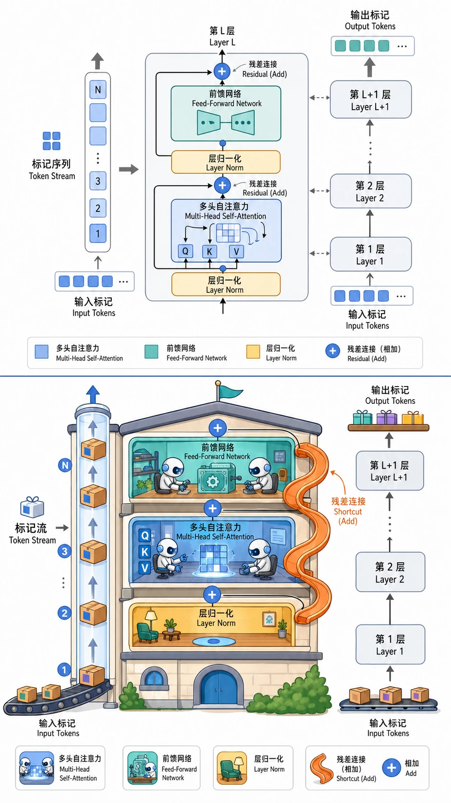

Transformer 完整架构
为什么 Attention 可以撑起整座模型
核心问题
你已经看过 Self-Attention 和 Multi-Head Attention。它们很强大，但一个注意力层还不是一个完整的模型。要真正处理序列到序列的任务（翻译、摘要、对话），你需要回答以下问题：
- 注意力层的输出怎么传给下一层？直接堆叠会不会导致训练不稳定？
- 只有注意力够吗？还需要什么其他组件？
- 编码器看完整个输入后，解码器如何利用编码器的信息来生成输出？
- 解码器生成第 $t$ 个词时，怎么保证它看不到第 $t+1$ 个词？
Transformer 的回答是：把 Multi-Head Attention 与残差连接、Layer Norm、前馈网络组装成标准化的"层"，然后把这些层堆叠成编码器和解码器。整个架构完全不依赖 RNN，训练时所有位置可以并行计算。

"Attention Is All You Need" 的含义
2017 年 Vaswani 等人的论文标题并不是说只需要注意力就能解决一切，而是说：
- 不需要 RNN：在此之前，序列建模几乎都依赖 RNN/LSTM 的循环结构
- 不需要 CNN：之前也有人尝试用 CNN 处理序列（ConvS2S）
- 注意力足以建模序列中任意两个位置之间的依赖关系，不再需要让信息沿着时间步逐个传递
整体架构鸟瞰
输出概率分布
↑
┌──────────────┐
│ Linear+Softmax │
└──────┬───────┘
┌──────────────┐
│ 解码器 │ × N 层
│ (Decoder) │
└──────┬───────┘
编码器输出 ────────┤
┌──────────────┐ ┌──────────────┐
│ 编码器 │ × N 层 │ 输出 Embed │
│ (Encoder) │ │ + 位置编码 │
└──────┬───────┘ └──────┬───────┘
┌──────────────┐ 目标序列（右移一位）
│ 输入 Embed │
│ + 位置编码 │
└──────┬───────┘
输入序列数据流总结（以翻译任务为例）：
- 输入序列经过 Embedding + 位置编码，进入编码器
- 编码器输出一个序列表示（每个位置都有一个向量）
- 目标序列（右移一位）经过 Embedding + 位置编码，进入解码器
- 解码器同时接收自身的输入和编码器的输出
- 解码器输出经过线性层 + Softmax 得到每个位置的词概率分布
Transformer 的层级结构
编码器层（Encoder Layer）
原始 Transformer 使用 N=6 个相同结构的编码器层堆叠。每一层包含两个子层：
输入 x
│
├──→ Multi-Head Self-Attention ──→ (+) ──→ Layer Norm ──→ 输出₁
│ ↑
└───────────────────────────────────┘ (残差连接)
输出₁
│
├──→ Feed-Forward Network ──→ (+) ──→ Layer Norm ──→ 输出₂
│ ↑
└─────────────────────────────┘ (残差连接)用数学表示（Post-LN 形式，即原始论文的写法）：
其中 $\text{MultiHeadAttention}(Q, K, V)$ 的三个参数都是 $x$ 自身，因此是自注意力。
残差连接（Residual Connection）
残差连接的公式：$\text{output} = x + F(x)$，即"跳过"子层，直接把输入加到子层的输出上。
为什么需要残差连接？ 没有残差连接时，梯度从第 $L$ 层传到第 $1$ 层需要经过所有中间层的连乘。如果某些层的梯度小于 1，连乘后梯度会指数级衰减。有了残差连接后：
即使 $\frac{\partial F_l}{\partial x_l}$ 很小，梯度中仍包含 identity 项 $I$，为梯度提供了直接传播路径，通常显著缓解深层网络的梯度衰减问题（注意这不是绝对的数学保证，而是实践中非常有效的机制）。6 层甚至几十层的 Transformer 能稳定训练，残差连接功不可没。
Layer Normalization
Layer Norm 对每个样本在特征维度上做归一化：
其中 $\mu, \sigma^2$ 在特征维度上计算，$\gamma, \beta$ 是可学习参数。
| 特性 | Batch Norm | Layer Norm |
|---|---|---|
| 归一化维度 | batch 维度（跨样本） | 特征维度（每个样本独立） |
| 依赖 batch 大小 | 是（小 batch 不稳定） | 否 |
| 序列长度可变 | 不方便 | 天然支持 |
Layer Norm 在 Transformer 中的位置有两种流派：
- Post-LN（原始论文）：$\text{LayerNorm}(x + \text{Sublayer}(x))$
- Pre-LN（现代模型）：$x + \text{Sublayer}(\text{LayerNorm}(x))$
前馈网络（FFN）
每个编码器层中的 FFN 是一个位置独立的两层全连接网络：
- $W_1 \in \mathbb{R}^{d_{ff} \times d_{model}}$，$W_2 \in \mathbb{R}^{d_{model} \times d_{ff}}$
- $d_{ff}$ 通常是 $d_{model}$ 的 4 倍（原始论文：$d_{model}=512, d_{ff}=2048$）
- 激活函数的演化：ReLU（原始）→ GELU（GPT-2/BERT）→ SwiGLU（LLaMA/PaLM）
FFN 的作用：注意力层负责"位置之间的信息交换"，FFN 负责"每个位置内部的非线性变换"。有研究表明，FFN 的参数中存储了大量的事实知识（类似于键值存储）。
解码器层（Decoder Layer）
解码器层比编码器层多一个子层，共三个：
输入 x（解码器的）
│
├──→ Masked Multi-Head Self-Attention ──→ (+) ──→ LN ──→ 输出₁
│ ↑
└──────────────────────────────────────────┘
输出₁
│
├──→ Multi-Head Cross-Attention ──→ (+) ──→ LN ──→ 输出₂
│ (Q=输出₁, K=V=编码器输出) ↑
└────────────────────────────────────┘
输出₂
│
├──→ Feed-Forward Network ──→ (+) ──→ LN ──→ 输出₃
│ ↑
└─────────────────────────────┘掩码自注意力（Masked Self-Attention）
生成第 $t$ 个 token 时，不能看到第 $t+1, t+2, \ldots$ 位置的信息。常见做法是用上三角掩码把"未来"位置的分数设为 $-\infty$：
位置 1 2 3 4
1 [ 可以 -∞ -∞ -∞ ] → 位置1只能看自己
2 [ 可以 可以 -∞ -∞ ] → 位置2能看1和2
3 [ 可以 可以 可以 -∞ ] → 位置3能看1、2、3
4 [ 可以 可以 可以 可以 ] → 位置4能看所有训练时目标序列的所有位置同时计算（Teacher Forcing），掩码保证每个位置"假装"看不到后面的位置，效果等价于逐步生成但计算效率高得多。
交叉注意力（Cross-Attention）
交叉注意力是解码器"读取"编码器信息的通道。关键区别在于 Q、K、V 的来源：
| 参数 | 来源 | 含义 |
|---|---|---|
| Q | 解码器当前层的表示 | "我想查询什么" |
| K | 编码器的最终输出 | "输入序列有什么可查的" |
| V | 编码器的最终输出 | "查到后取什么值" |
完整数据流
编码器侧：
输入 token IDs → Embedding (m, 512) → + 位置编码
→ Encoder Layer 1: Self-Attention → Add&Norm → FFN → Add&Norm
→ Encoder Layer 2~6: (相同结构)
→ 编码器输出: (m, 512)解码器侧：
目标 token IDs（右移一位）→ Embedding (n, 512) → + 位置编码
→ Decoder Layer 1:
Masked Self-Attention → Add&Norm
Cross-Attention(Q=自身, K=V=编码器输出) → Add&Norm
FFN → Add&Norm
→ Decoder Layer 2~6: (相同结构)
→ Linear (n, vocab_size) → Softmax → 概率分布三种注意力的对比
| 类型 | Q 来自 | K, V 来自 | 掩码 | 作用 |
|---|---|---|---|---|
| 编码器 Self-Attention | 输入序列 | 输入序列 | 无 | 输入内部建模依赖 |
| 解码器 Masked Self-Attention | 目标序列 | 目标序列 | 因果掩码 | 已生成序列内部建模依赖 |
| Cross-Attention | 解码器表示 | 编码器输出 | 无 | 解码器从编码器获取信息 |
建议：对照完整架构图（本节开头的"整体架构鸟瞰"）再看一遍这张表，把三种注意力在架构中的位置与它们的 Q/K/V 来源对应起来，会更容易形成整体画面。